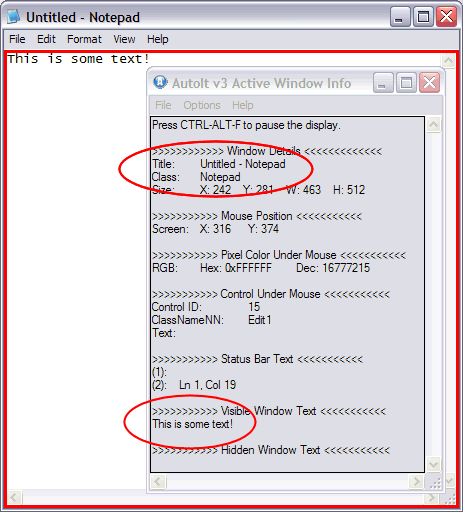

When automating, most windows can be uniquely identified by their title or a combination of their title & text. And by using AutoIt Window Info Tool (or even by sight) this information is easy to obtain. The titles of most windows are fairly obvious, for example Untitled - Notepad is the title of the notepad.exe editor and in many cases this is enough to automate.
Note: If a blank string "" is given for both title and text then the currently Active window will be used (this is not true in some of the more advanced WinTitleMatchModes)!
Window titles and text are case sensitive. You must
match the case and punctuation exactly. To avoid problems select the title/text
in the Window Info Tool and use ctrl-c to copy it and then paste
it directly into your script.
You can force match in lower case using advanced modes.
Most of AutoIt's window functions have space for a title and text entry, here is the WinWaitActive function. This function pauses execution of the script until the specified window appears and is active.
WinWaitActive ( "title", ["text"], [timeout] )
title is the only required parameter for this function, both the text and timeout are optional. In some functions the text parameter is not optional, if you do not wish to specify any text then just use "" (a blank string). A blank string, or nothing at all, in the text tells AutoIt that any text is valid.
To use the above function with any notepad window both these methods will work:
WinWaitActive("Untitled - Notepad")
and
WinWaitActive("Untitled - Notepad", "")
If the same notepad window had "This is a line of text" typed into the window, the Window Info Tool would show:

Note that the Window Info Tool has seen the title and text of the notepad window. Whatever the Window Info Tool can see is what AutoIt can see. Now we have enough information to identify this exact window even if there are lots of other notepad windows open. In this case we use:
WinWaitActive("Untitled - Notepad", "This is some text!")
The window text consists of all the text that AutoIt can "see". This will usually be things like the contents of edit controls (as above with "This is a line of text") but will also include other text like:
The important thing is that you can use the text along with the title to uniquely identify a window to work with.
When you specify the text parameter in a window function it is treated as a substring. So for the example above if you used the text "is some " you would get a match.
What has been described is the default mode that AutoIt operates in, there are a number of more advanced modes to use when things are not as simple as this.